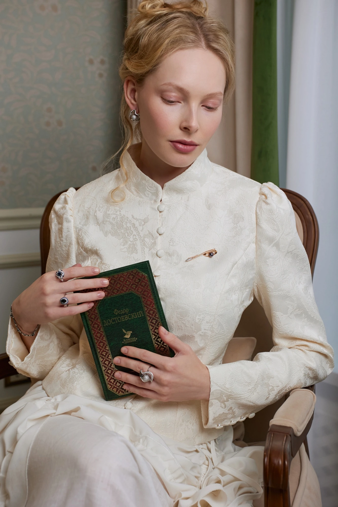
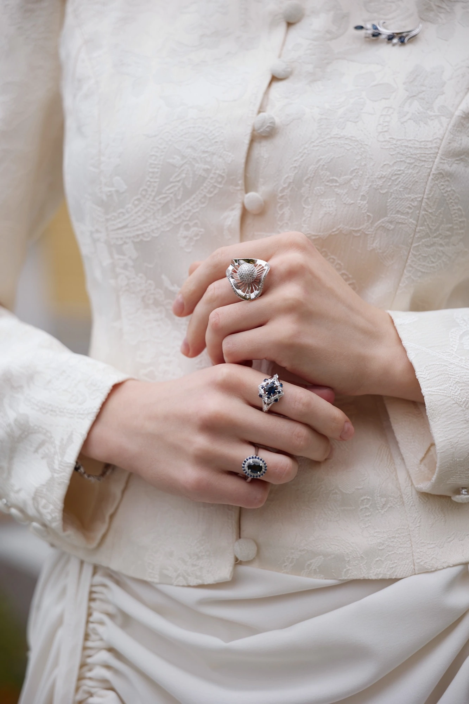
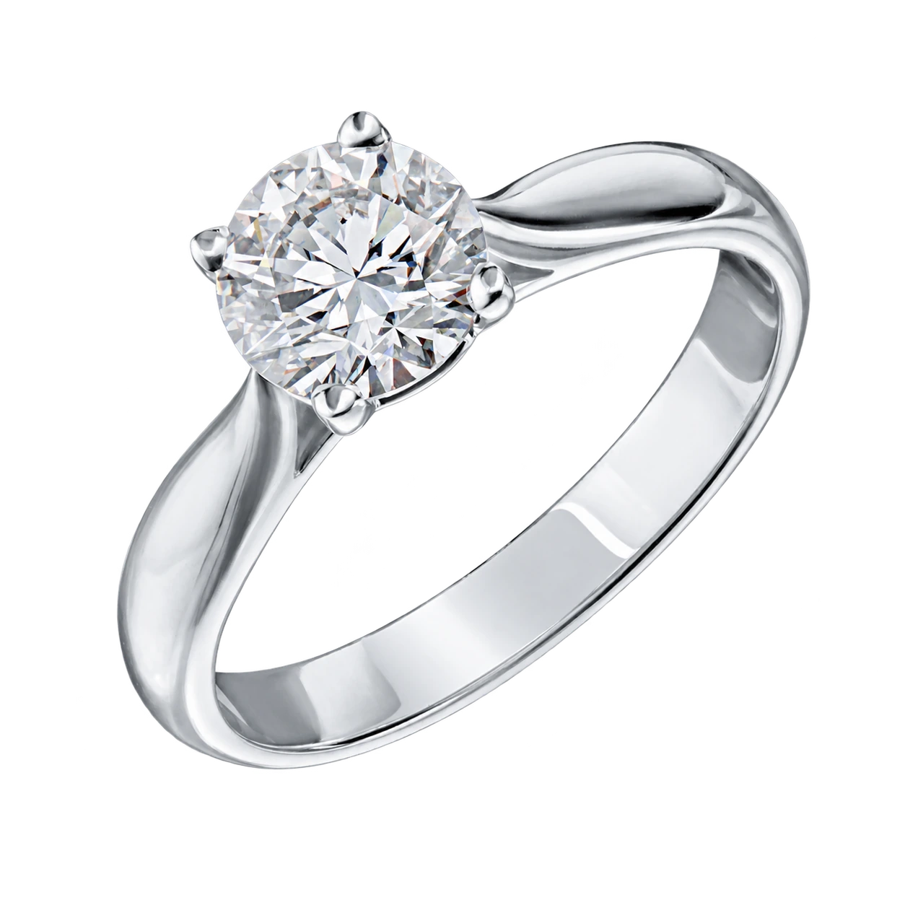
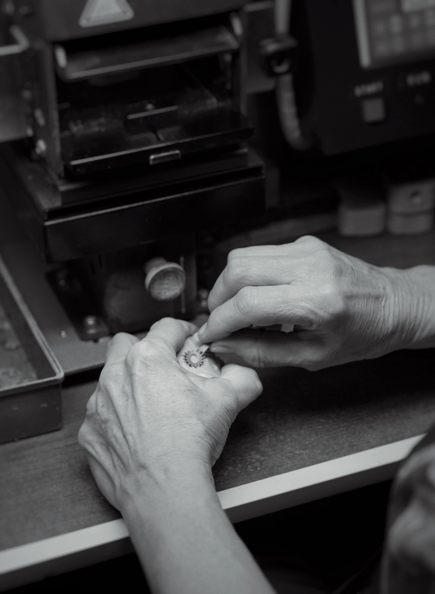
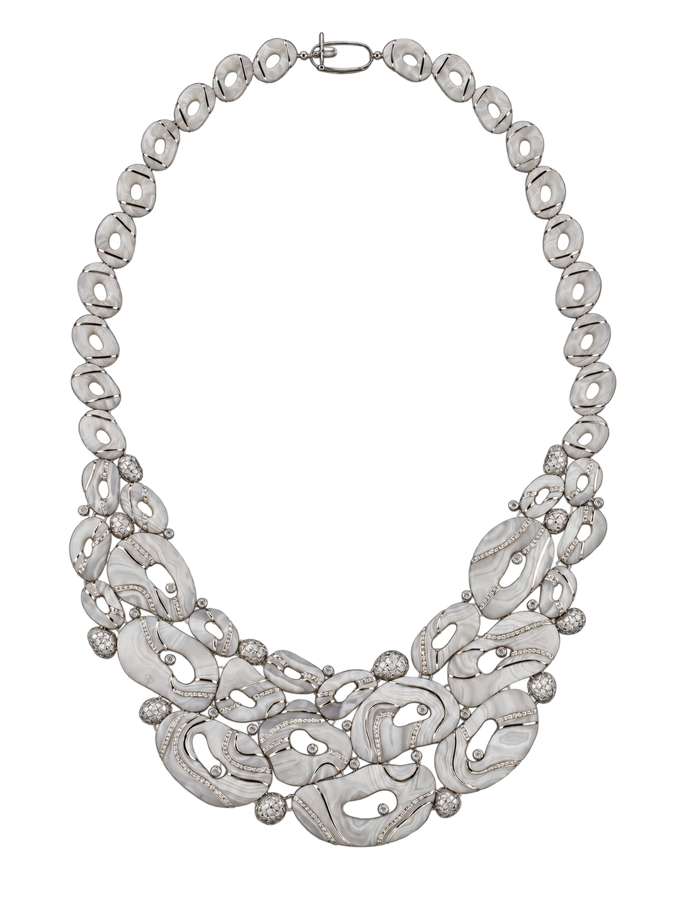
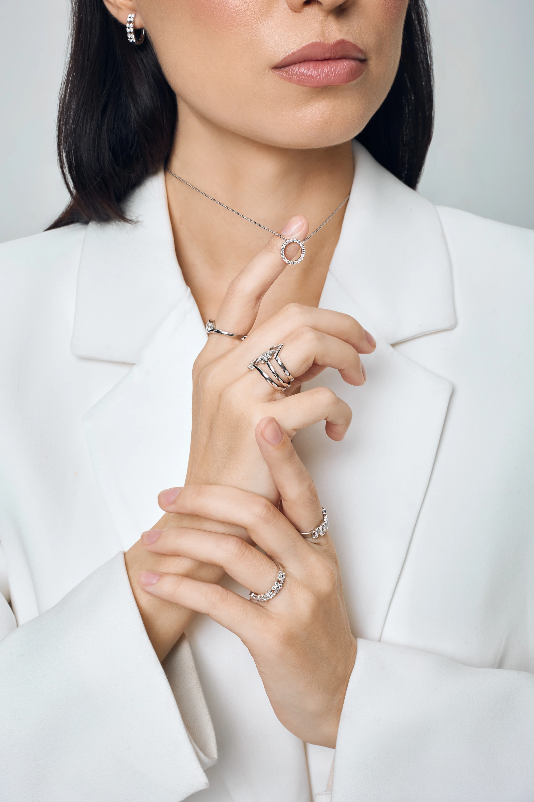
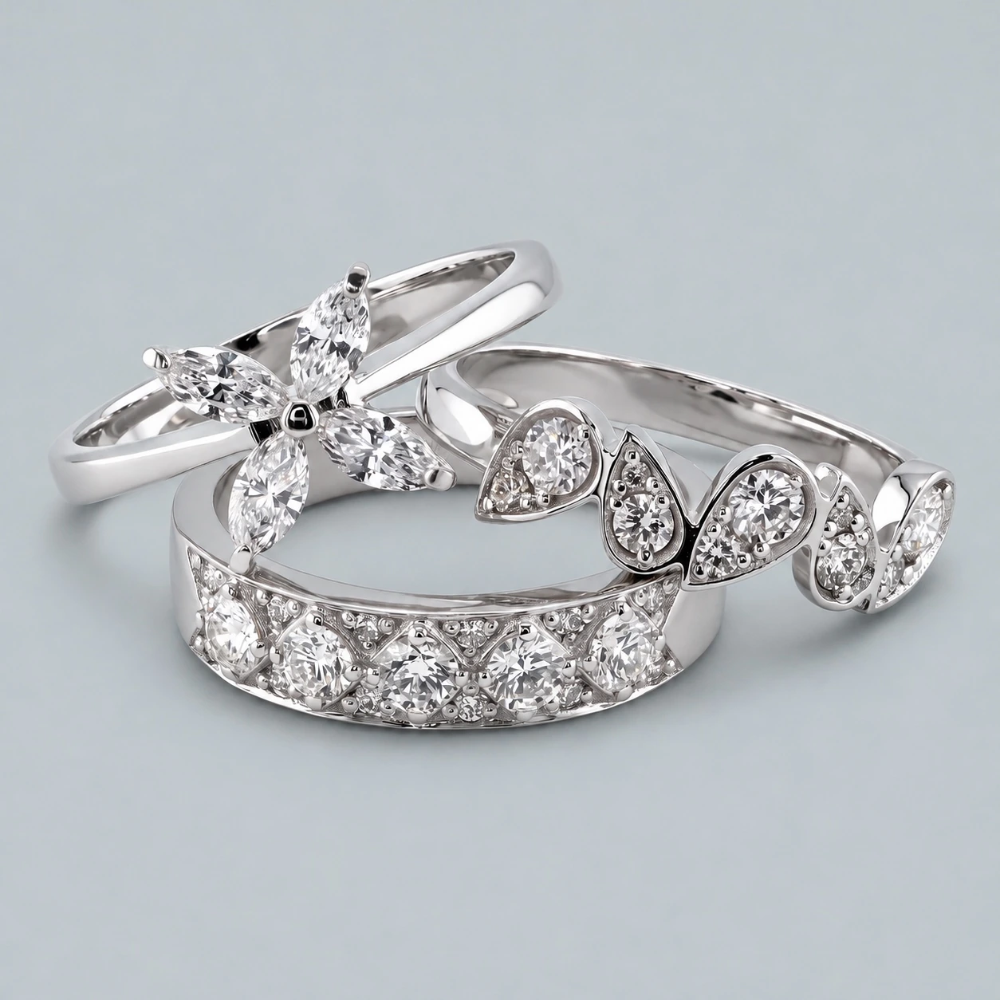
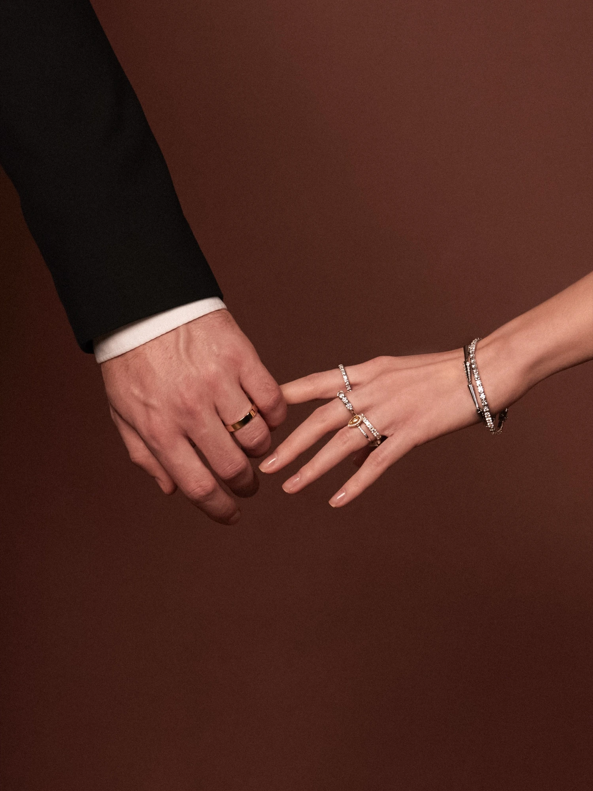
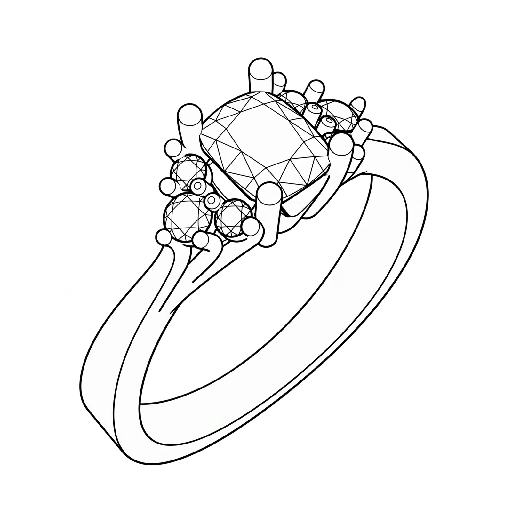
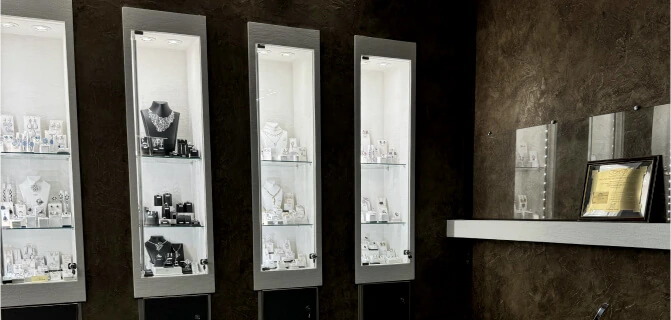

Эксклюзив
Выразительные камни и сложные композиции для тех, кто выбирает украшение как самостоятельное произведение.
Коктейльные кольцаПетербургский ювелирный дом
От замысла до закрепки камня — создаём украшения в Петербурге с 1996 года.


Петербург. С 1996 года
Красота украшения начинается с пропорций, а раскрывается в деталях, которые чувствуются каждый день.
В КАСТ эскиз, литьё, обработка и закрепка камней проходят внутри одного завода. Так мы сохраняем замысел художника на каждом этапе — вплоть до посадки кольца на руке.
Мастера, работающие здесь с первых лет, передают свой опыт команде. Из этого постоянства рождается почерк завода.
О заводе КАСТ
Работа, вошедшая в историю
Созданное Верой Черновой на базе завода КАСТ колье «Грёзы» вошло в собрание Государственного Эрмитажа.
От повседневной классики до авторских композиций — найдите своё прочтение бриллианта.


Выразительные камни и сложные композиции для тех, кто выбирает украшение как самостоятельное произведение.
Коктейльные кольца

Лаконичные формы, которые легко становятся частью личного стиля. Для обычного дня и особенного вечера.
Классические кольцаВыразительность крупных камней
Украшения с крупными бриллиантами и выразительными сочетаниями камней. В каждой композиции оправа раскрывает их красоту, сохраняя точность пропорций и ясность линий.
Украшения ПремиумВыбираете подарок или первое украшение с бриллиантом?
Обсудить выбор с консультантом
Ваше общее будущее
Помолвочные и обручальные кольца для решения, с которого начинается ваша общая история.
Свет в каждом движении
Непрерывная линия бриллиантов, которую хочется носить каждый день.
Выбрать браслет
Создадим украшение по вашей идее — от первого эскиза до готового изделия из золота с драгоценными камнями. Мастера ювелирного дома КАСТ проработают форму, подберут камни и воплотят детали, которые важны именно вам.
Работаем под ваш бюджет: предложим варианты камней, металла и исполнения, сохранив характер вашего замысла.
Подробнее об ательеШоурум завода в Петербурге
Рассмотрите камни при разном освещении и почувствуйте посадку украшения. Мы поможем сравнить изделия и найти ваше.
Записаться по телефону +7 921 906 37 20
Санкт-ПетербургПонедельник — пятница
По предварительной записи